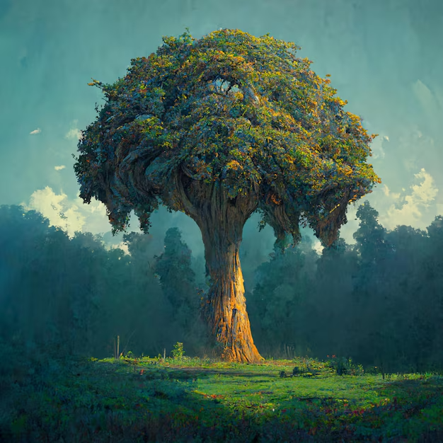

Existía un árbol viejo y muy sabio que vivía solo en un campo despejado,
en medio de un bosque silencioso. No había otros árboles cerca; sus ramas
se alzaban solitarias contra el cielo. Su única compañía eran unos niños
que solían jugar entre sus raíces, reír bajo su sombra y trepar por su
tronco rugoso. Para el árbol, esas risas eran el mejor regalo que la vida
aún podía ofrecerle.
